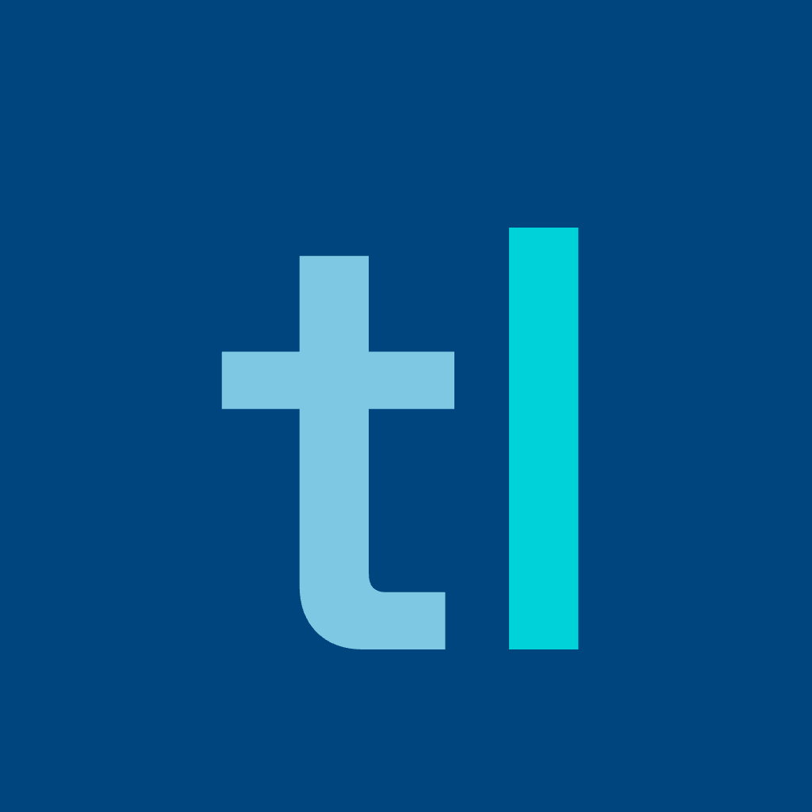

Primary — deep blue bg (app icons, favicon, PWA)

logo.png (square source)
icon-192.png
icon-96.png
favicon-64.png
favicon.png
Transparent-corners version — floats on any background
on dark
on light
on brand blue
All three variants (SVG logo marks)
logo-mark.svg (deep blue)
logo-mark-brandblue.svg
logo-mark-white.svg
Apple touch icon (180×180)
apple-touch-icon.png